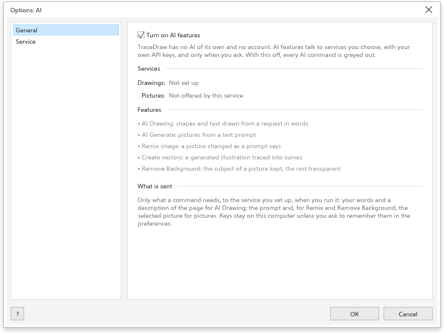

Menggambar dan membuat gambar dengan AI
TraceDraw dapat menggambar dari deskripsi kata-kata dan membuat gambar dengan layanan AI yang Anda pilih dan atur dengan kunci Anda sendiri. TraceDraw tidak memiliki AI sendiri dan tidak memerlukan akun: tidak ada yang dikirim sampai Anda menjalankan perintah AI, dan saat itu hanya apa yang dibutuhkan perintah tersebut yang dikirim ke layanan yang Anda atur. Setiap permintaan ditagih oleh layanan Anda; server model lokal di komputer Anda tidak memakan biaya.
Mengatur layanan AI
Alat > Opsi > AI memiliki dua halaman.

Di halaman Layanan, atur satu layanan AI untuk semua fitur AI:
- Pilih Preset: Anthropic, OpenAI, Google Gemini, atau server model di komputer Anda (Ollama, LM Studio, llama.cpp server, vLLM). Preset mengisi jenis layanan dan alamatnya; Kustom menerima alamat apa pun yang berbicara dengan bahasa yang sama dengan chat completions OpenAI.
- Ketik kunci API akun Anda di layanan itu (server lokal tidak membutuhkannya). Centang Ingat kunci di komputer ini untuk menyimpannya; kunci lalu disimpan sebagai teks biasa di preferensi Anda.
- Pilih Model, dan Model gambar untuk layanan yang dapat membuat gambar (OpenAI, Google Gemini, atau alamat kustom dengan model gambar).
- Klik Test Connection. Perintah ini meminta daftar model dari layanan dan menyebutkan berapa banyak yang tersedia, atau menampilkan galatnya.
Tampilkan bilah perintah meletakkan bilah perintah AI di atas palet warna.
Umum

- Turn on AI features (aktif): bila dimatikan, setiap perintah AI menjadi abu-abu.
- Services: apakah Drawings dan Pictures berstatus Ready atau Not set up.
- Features: apa yang dilakukan setiap perintah AI.
- What is sent: hanya yang dibutuhkan perintah, ke layanan yang Anda atur, saat Anda menjalankannya.
Menggambar dengan kata-kata
Ketik permintaan seperti "sepeda merah dengan roda biru" atau "perbesar lingkaran dan letakkan judul di bawahnya", di bilah perintah atau di mode Gambar dengan kata-kata pada panel AI Generate (Objek > AI Generate > Draw with Words), lalu tekan Gambar atau Enter. Layanan menulis skrip untuk gambar, yang dijalankan TraceDraw sebagai satu langkah urungkan. Percakapan disimpan, jadi Anda dapat meminta perubahan; Percakapan baru memulai dari awal. Buka di Skrip menampilkan skripnya.
Panel Buat dengan AI
Panel AI Generate (Alat > AI Generate, atau tombol AI di bilah alat standar) membuat gambar dengan model gambar dari layanan Anda.

Pilih mode dengan tombol di bagian atas:
- Buat gambar: gambar dari deskripsi. Beri saya ide mengisi sebuah gagasan. Pilih rasio aspek.
- Remiks gambar: mengubah gambar sesuai deskripsi Anda (awalnya bitmap yang dipilih). Permintaan siap pakai mencakup mockup, pulihkan foto, warnai sketsa, ganti latar belakang, ubah musim, dan warnai ulang.
- Buat vektor: ilustrasi yang diubah menjadi bentuk yang dapat disunting, baik gambar yang dijiplak menjadi kurva maupun gambar SVG yang ditulis oleh model teks.
- Gambar dengan kata-kata (lihat di atas).
Setiap mode memiliki Model, gambar referensi opsional (Gunakan pilihan atau Impor berkas), Perintah, serta ubin Gaya dan Palet warna. Di bagian bawah, atur jumlah Gambar (1 sampai 4) dan Sisipkan ke gambar, lalu klik Buat. Hasil tetap ada di panel; klik salah satunya untuk menyisipkannya.
Perintah AI lainnya
- Bitmap > Hapus Latar dengan AI mempertahankan subjek gambar dan membuat sisanya transparan.
- AI Art Styles melukis ulang pilihan dalam salah satu dari delapan gaya.
Selama AI dimatikan atau belum diatur, perintah-perintahnya berwarna abu-abu, dan tipnya menjelaskan alasannya; tombol Set Up AI membuka halaman opsi yang sesuai.